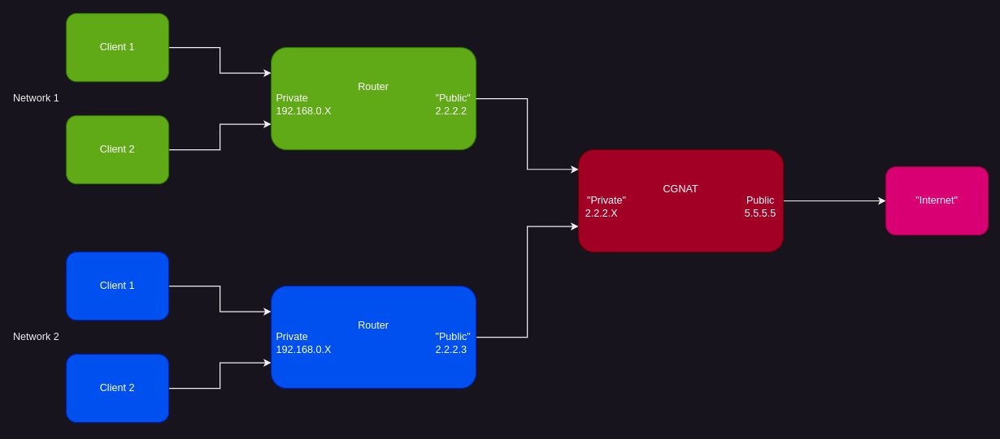

BytesOfProgress
Wiki
CGNAT
Carrier-Grade Network Address Translation
IPv4-addresses are running out globally due to the explosion of internet-connected devices. CGNAT works by translating private IP-addresses of multiple customers of an Internet Service Provider (ISP) into a single shared public IP-address, allowing many devices to access the internet using fewer public IPv4-addresses. This way, ISPs can conserve IPv4-addresses while still providing internet access to their customers.
Carrier-Grade Network Address Translation visualized:
Issues for selfhosting
CGNAT can introduce challenges for self-hosting because it typically prevents incoming connections from reaching devices behind the NAT. When you self-host services like web servers, game servers, or any other service that requires inbound connections, CGNAT can be problematic because it doesn't allow those incoming connections to reach your self-hosted services directly.
Your ISP assigns you a private IP-address that's shared with many other customers, and all traffic to and from the internet appears to originate f rom the same public IP-address. As a result, when external devices try to connect to services you are hosting, the CGNAT device at your ISP doesn't know which internal device to forward the connection to.
Overcoming CGNAT for selfhosting
To overcome this limitation, you would typically need a public IPv4-address that is not shared via CGNAT, or you have to use IPv6, which has a much larger address space and does not suffer from the same shortage issues as IPv4.
There are also other ways to overcome CGNAT, for example Tunneling (Cloudflare's Argo Tunnel e.g.) or using a VPS with a public IPv4.
back